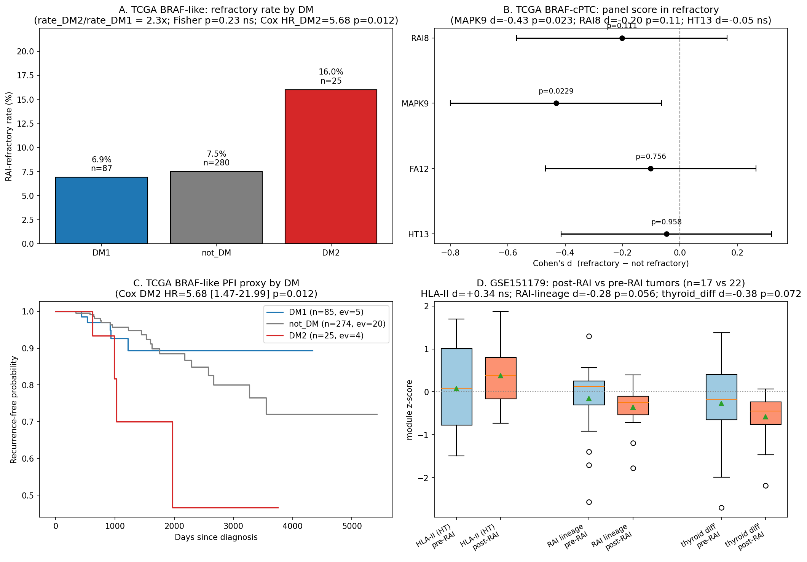
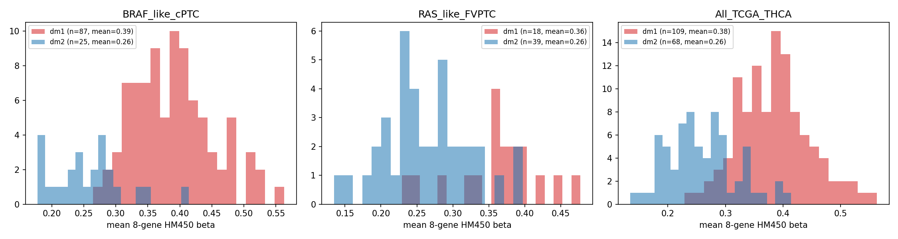
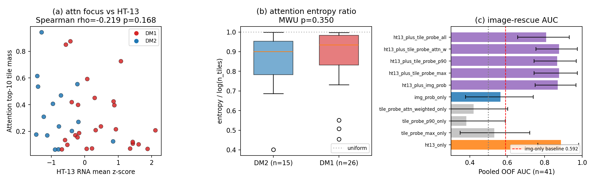
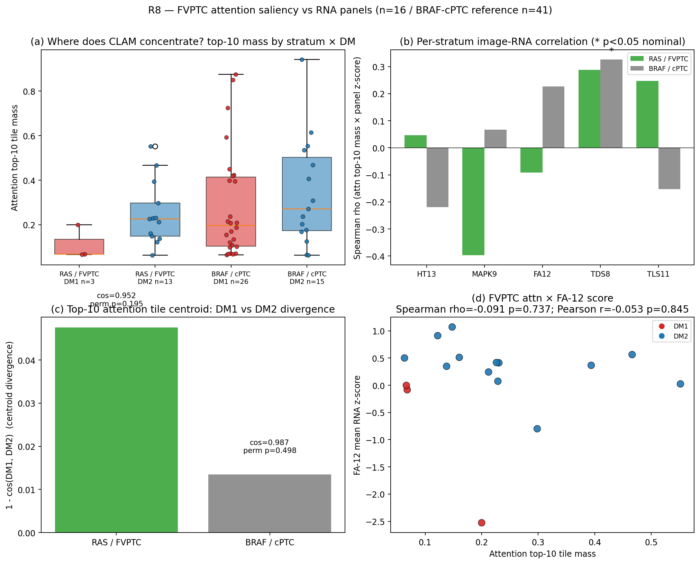
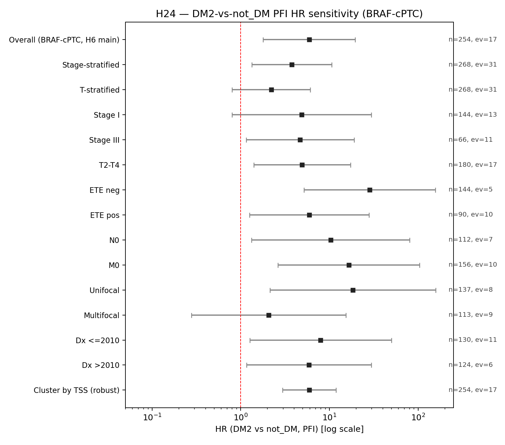

01Decision
What to do after Claude limit
Chosen path: Option C
Do not spend more GPU or writing time trying to rescue H15v2 tonight. The current image result is already interpretable: the image channel is not the BRAF/cPTC immune-axis reader. Treat H15/foundation image as future work unless K2 H&E or a thyroid-pretrained encoder becomes available.
Paper 1
Absorb the BRAF clinical/biology axis into Paper 1 factual scaffold and supplementary defense.
Paper 2
UNI LOTO preserves an overall image signal, but subgroup claims stay gated on K2 H&E / external WSI.
H15v2
No usable local H15 output at takeover; do not restart without explicit reason.
02Headline Numbers
Traceable values from sprint reports and summary JSON
| Result | Value | Source | Disposition |
|---|---|---|---|
| DM1 x TERT pooled OS meta | HR 19.2 [7.16, 51.3], p=4.2e-9, I2=26% | r1_meta_survival/R1_REPORT.md | Hard gate passes |
| Landa external DM1+/TERT+ OS | HR 12.78; 14/14 deaths | h8_tert_replication/H8_REPORT.md | External replication |
| DM2 vs not-DM in TCGA BRAF-like PFI | HR 4.67 [1.41, 15.5], p=0.012 | r1_meta_survival/R1_REPORT.md | BRAF-context bad actor |
| BRAF-cPTC DM2 PFI / RAI arm | PFI HR 5.68; refractory proxy 16% vs 6.9% | h12_rai_response/H12_REPORT.md | Clinical translation |
| HT-13 after purity residualization | d 1.42 -> 0.88 | r6_purity_audit/R6_REPORT.md | Purity artifact rejected |
| Single-cell compartment split | HT peaks myeloid/B/T; FA peaks malignant | r7_singlecell/R7v2_REPORT.md | Biology model locked |
| Lee 2024 survival replication | not testable | r4_lee2024_survival/R4_REPORT.md | Do not claim |
| UNI-final center holdout | overall AUC 0.852; BRAF-like 0.855; RAS-like 0.718 | audit_uni_loto/UNI_LOTO_SUMMARY.json | Paper 2 pilot survives |
| K2 full-transcriptome pilot | 9/9 local FASTQs; all DM2; HT tumor-normal AUC 0.40 | h_k2_full_quant/K2_PILOT_VERDICT.md | Negative-control reserve |
03Clinical Axis
DM2 is the BRAF-context bad actor; DM1 x TERT is the escape
Core clinical rewrite
Do not write "DM1 is aggressive" as a generic claim. In BRAF-cPTC, DM1 is mostly protective or indolent. The clinical risk arm is DM2, and the exceptional aggressive niche is DM1 with TERT promoter mutation.
Reviewer boundary
DM1 x TERT is strong but still a niche. TCGA has n=4 comutants; the reason it is now usable is the Landa external replication and low-heterogeneity pooled estimate.


04Biology Model
Two-source bulk axis with purity and methylation defenses
| Question | Answer | Evidence | Caveat |
|---|---|---|---|
| Is DM1 just B-cell contamination? | No. Myeloid, DC, Treg, Tfh, CD8, naive B and TLS all rise. | h10_celltype_deconv/H10_REPORT.md | Bulk deconv resolves lineages, not exact microanatomy. |
| Where does HT-13 live at single-cell level? | Myeloid/B/T dominate; malignant HT-13 is low. | r7_singlecell/R7v2_REPORT.md | Author celltype labels are 8-class, not fine subclusters. |
| Where does FA-12 live? | Malignant cells, supporting a thyroid-intrinsic metabolic arm. | r7_singlecell/R7v2_REPORT.md | Absolute score magnitudes are normalization-dependent. |
| Is HT-13 a purity artifact? | No. Residual d remains +0.88 after leukocyte adjustment. | r6_purity_audit/R6_REPORT.md | Leukocyte fraction is still part of the phenotype. |
| Is methylation causal? | Not proven. It is a dominant correlative layer. | r9_hm450_immune/R9_REPORT.md, h13_mediation/H13_REPORT.md | Keep Q9 "motivates rather than confirms". |

05Image Disposition
H&E is stratum-complementary, not the BRAF-cPTC rescue path
Better after UNI LOTO
The ViT-L RAS-like AUC=1.000 headline remains a TSS artefact, but the UNI-final model is not dead. GPU leave-one-TSS-out gives overall AUC 0.852, BRAF-like AUC 0.855, and RAS-like AUC 0.718. This supports a cautious Paper 2 pilot, not a main-text clinical image claim.
Kill the immediate "image rescue" frame
Paper 2 cannot currently carry a main-text claim that generic ImageNet/CLAM reads the BRAF-cPTC immune axis. The honest frame is narrower: image works where morphology is visible (RAS/FVPTC); RNA works where the biology is immune/metabolic and visually subtle (well-differentiated BRAF/cPTC).


06Korean / K2 Status
Lee expression support is valid; K2 full-transcriptome pilot is complete but not deployable
Lee 2024
Use for expression-side Korean replication only. It has n=632 RNA with full HT/FA/MAPK coverage and supports orthogonal HT vs FA axes. Public release lacks per-sample survival, BRAF/RAS, and TERT.
K2 quant verdict
The local K2 re-quant finished for 9/9 available FASTQs and recovered full HT-13/FA-12/MAPK-9 coverage. It is still not a breakthrough: n=9, all prior calls are DM2, and tumor-vs-normal panel tests are not significant. Use it only as a completed negative-control reserve.

| K2 pilot metric | Value | Interpretation | Source |
|---|---|---|---|
| Quantification | 9/9 local FASTQ runs | Technical success | k2_full_summary.json |
| Panel coverage | HT-13 13/13; FA-12 12/12; MAPK-9 9/9 | Full panel coverage | k2_full_summary.json |
| DM labels | 9/9 DM2 | Cannot test DM1 vs DM2 | k2_full_panel_scores.tsv |
| HT-13 tumor vs normal | AUC 0.40; MW p=0.730 | No deployable signal | k2_panel_aucs.tsv |
| FA-12 / MAPK-9 tumor vs normal | AUC 0.75 / 0.75; MW p=0.286 / 0.286 | Descriptive only | K2_PILOT_VERDICT.md |
| Dataset | Use now | Do not claim | Source |
|---|---|---|---|
| Lee 2024 GSE213647 | Expression-side Korean replication | Survival / driver / TERT replication | h30_lee2024_full/H30_REPORT.md, r4_lee2024_survival/R4_REPORT.md |
| K2 PRJEB11591 mini-index | Score-distribution reviewer reserve | Full MAPK/HT/FA transcriptome evidence | h3_k2_transfer/H3_REPORT.md |
| K2 kallisto re-quant | Completed n=9 negative-control pilot | n=260 full-transcriptome result or DM1-vs-DM2 Korean replication | h_k2_full_quant/K2_PILOT_VERDICT.md |
07Figure Allocation
What can be moved into Paper 1 scaffold without touching voice-protected prose
| Figure | Content | Status | Primary inputs |
|---|---|---|---|
| Fig 1 | BRAF-cPTC DM1/DM2 clinical split + DM1 x TERT escape schematic | ready as scaffold | H6, H8, R1 |
| Fig 2 | HT immune x FA thyroid-lipid orthogonal biology | ready as scaffold | H2, H5 |
| Fig 3 | Compartment model: deconv + scRNA + spatial HLA-DRA | ready as scaffold | H10, R7, R2, H11 |
| Fig 4 | Cross-cohort expression/protein validation | ready as scaffold | H4, H30, Mun memory |
| Fig 5 | Clinical translation: DM2 PFI/RAI + DM1 x TERT pooled forest | ready as scaffold | R1, H8, H12 |
| Fig 6 | H&E stratum-complementarity | supp/pilot | H1, H7, R8 |
| Supp | Purity, panel disentanglement, methylation boundary, ICI reserve | ready | R3, R6, R9, R5, R10 |

08Decision Matrix
Disposition column is the operational answer
| Item | Evidence | Risk | Disposition |
|---|---|---|---|
| H15v2 foundation image rescue | No usable local output; image story already bounded by H7/R8 | GPU spend, overfitting, more distraction | Defer |
| Paper 1 BRAF clinical axis | R1/H8/H12 strong and clinically coherent | Needs figure/caption scaffold, not voice prose | Absorb |
| Paper 2 image-DM1 main claim | UNI LOTO overall AUC 0.852, but RAS-like subgroup falls to 0.718 and TCGA TSS risk remains | Reviewer will attack TSS and stratum mismatch | Pilot, not main claim |
| Lee 2024 survival | R4 checked GEO/MOESM/cBioPortal | False claim if used as survival validation | Block |
| K2 local re-quant | 9/9 local FASTQs quantified; all DM2; panel tests non-significant | Misleading "full K2" language | Negative-control reserve |
| DM1 x TERT | TCGA+Landa HR 19.2 | Small TCGA cell; wide adjusted CI | Lead as escape niche |
| DM2 BRAF-context risk | PFI HR 4.67/5.68, RAI direction | Not generic across RAS | Lead as BRAF-specific arm |
| ICI translation | R5/R10 directionally useful | PD-L1 IHC beats HT-13 in IMvigor | Paper 3 reserve |
09Weakness Lock
Reviewer attack surface converted into bounded claims
Best reinforcement move
Do not hide weak results. Use them as boundary markers: K2 is negative-control reserve, H15v2 is deferred, image-DM1 is pilot, and methylation remains correlative. This protects the main Paper 1 claim from overreach.
| Reviewer attack | Weak point | Defense | Final placement |
|---|---|---|---|
| DM1 is not generically aggressive | DM1 is often indolent/protective in BRAF/cPTC | Split into two clinical gates: DM2 is the BRAF-context adverse arm; DM1 x TERT is the aggressive escape niche. | Main Paper 1 scaffold |
| Korean validation is overclaimed | Lee lacks public survival/driver/TERT; K2 re-quant is n=9 and all DM2 | Use Lee for expression replication only; use K2 as a completed technical negative-control. | Supplement / reserve |
| Image-DM1 is site/TSS artifact | ViT-L RAS-like AUC=1.000 is not deployable | Retain UNI LOTO as pilot support only: overall AUC 0.852, BRAF-like 0.855, RAS-like 0.718. | Paper 2 pilot |
| Mechanism is not causal | No ChIP-seq, CRISPRi, DNMT perturbation, or PDX rescue | Preserve the Q9 boundary: methylation and MAPK/HT routes motivate, not confirm, upstream silencing. | Protected author voice / caveat |
| Panel is cherry-picked | Eight genes selected from thyroid differentiation biology | TDS-16 checks show Panel-8 is a compact readout, not a selectively extreme subset. | Q13 / Supp SX_v13 |
| Cross-cohort MAPK heterogeneity is high | I2=72.9% in five-cohort forest | Report heterogeneity transparently as predicted by the two-route model: MAPK route, HT route, advanced saturation. | Q14 / Supp SX_v14 |
| HT-13 is immune contamination | HT axis has immune-lineage components | Call it tissue-state biology, not contamination; residual d remains +0.88 after leukocyte adjustment. | Biology scaffold |
| GPU rescue failed | H15v2 no usable local output | No restart unless new K2 H&E/external WSI or a thyroid-pretrained encoder changes the decision. | Operational closeout |
| Unsafe wording | Reviewer-safe replacement |
|---|---|
| "K2 validates the Korean transcriptome result." | "K2 is a completed n=9 negative-control pilot and is not used as Korean DM1/DM2 validation." |
| "Lee validates survival." | "Lee/GSE213647 supports expression-side replication; public fields do not permit survival, driver, or TERT validation." |
| "Image model reads DM1 robustly." | "UNI image-DM1 signal survives center holdout overall, but subgroup and TSS limits keep it in pilot status." |
| "DM1 is the aggressive subtype." | "In BRAF-context disease, DM2 is the adverse arm; DM1 becomes high-risk chiefly through DM1 x TERT." |
| "Methylation explains the mechanism." | "Promoter methylation is a strong correlative layer that motivates, rather than confirms, upstream silencing." |
10Operational State
Pods, local jobs, and safety checks
| Process | State | Action taken | Next check |
|---|---|---|---|
| RunPod `thca-neo-bayesian-aux` | Was RUNNING idle, GPU 0%, no useful files | Stopped to EXITED | Leave off |
| RunPod `thca-img-dm1-a6000` | EXITED | No action | Leave off |
| RunPod `thca-spark-dm-a6000-v4` | GPU jobs completed; strict ESMFold outputs recovered | Stopped to EXITED | Leave off unless new GPU work is needed |
| Local K2 kallisto | Completed 9/9; aggregate exit=0 | Report + figure generated | h_k2_full_quant/K2_PILOT_VERDICT.md |
| Disk | root 86%, /data 46% | No large root writes | Keep outputs under project/results or project/data |
cat project/results/p2_braf_nature_sprint_2026_05_09/h_k2_full_quant/K2_PILOT_VERDICT.md cat project/results/p2_image_dm1_v2_foundation_clam_2026_05_07/analysis_supp/audit_uni_loto/UNI_LOTO_SUMMARY.json
11Sources + Paths
Every major claim points to a local artifact
| Artifact | Path |
|---|---|
| Codex v2 synthesis | project/results/p2_braf_nature_sprint_2026_05_09/_synthesis/NATURE_TIER_SYNTHESIS_V2_CODEX_TAKEOVER.md |
| Decision lock v3 | project/results/p2_braf_nature_sprint_2026_05_09/_synthesis/PAPER1_PAPER2_DECISION_LOCK_V3.md |
| Weakness reinforcement lock v1 | project/results/p2_braf_nature_sprint_2026_05_09/_synthesis/WEAKNESS_REINFORCEMENT_LOCK_V1.md |
| Original sprint synthesis | project/results/p2_braf_nature_sprint_2026_05_09/_synthesis/NATURE_TIER_SYNTHESIS.md |
| Clinical meta | project/results/p2_braf_nature_sprint_2026_05_09/r1_meta_survival/ |
| TERT replication | project/results/p2_braf_nature_sprint_2026_05_09/h8_tert_replication/ |
| RAI response | project/results/p2_braf_nature_sprint_2026_05_09/h12_rai_response/ |
| Deconvolution | project/results/p2_braf_nature_sprint_2026_05_09/h10_celltype_deconv/ |
| Single-cell | project/results/p2_braf_nature_sprint_2026_05_09/r7_singlecell/ |
| Purity audit | project/results/p2_braf_nature_sprint_2026_05_09/r6_purity_audit/ |
| Image negative/pilot | h7_perm_null/, r8_fvptc_saliency/ |
| UNI LOTO audit | project/results/p2_image_dm1_v2_foundation_clam_2026_05_07/analysis_supp/audit_uni_loto/ |
| K2 pilot verdict | project/results/p2_braf_nature_sprint_2026_05_09/h_k2_full_quant/K2_PILOT_VERDICT.md |
| K2 quant outputs | project/results/p2_braf_nature_sprint_2026_05_09/h_k2_full_quant/ |
| Recovered strict ESMFold outputs | project/results/p_neo_bayesian_2026_05_09/wave8b_strict_structure_2026_05_09/ |
| Memory | ~/.claude/projects/-home-seungho-personal-THCA-data-analysis/memory/p2_braf_nature_sprint_v2_codex_takeover_2026_05_09.md |